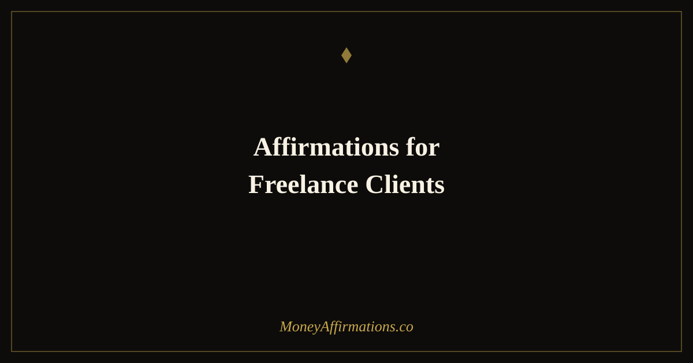

50 Affirmations for Freelance Clients to Attract Ideal Work and Fair Pay

Every freelancer knows that client attraction is never purely about the work. Two freelancers with identical skills, portfolios, and rates will consistently attract different clients — different in quality, generosity, respect, and how readily they pay. The difference is rarely visible in any single email or proposal. It lives in the accumulated internal signal that runs beneath the surface of every communication: how confidently you describe your work, how comfortably you hold your price, how clearly your boundaries are communicated from the start, and whether you give off the quiet energy of someone who is choosing their clients or someone who is grateful for whoever shows up.
These 50 affirmations move through the full client journey — from initial attraction through to referrals and retention — so that every stage of the relationship begins with the right internal foundation.
Client attraction is partly strategy and partly energy. You can do all the right outreach while unconsciously signalling desperation, undervaluing yourself, or attracting clients who haggle. These affirmations address the internal patterns that shape who says yes to you — and how much they pay.
What are affirmations for freelance clients?
Affirmations for freelance clients are present-tense statements that reinforce the beliefs and self-perceptions that attract high-quality, well-paying, respectful clients. They address the psychological barriers most freelancers encounter at every stage of the client journey: the self-doubt before sending a proposal, the anxiety around naming a rate, the difficulty holding a boundary without apologising, the fear during a quiet period. Unlike general money affirmations, these are grounded in the specific emotional landscape of freelance work — where income is variable, self-worth and work quality are deeply intertwined, and the relationship with clients is both professional and deeply personal.
50 affirmations for freelance clients
Attracting ideal clients who value your work (1–10)
- I attract clients who genuinely value the quality and care I bring to my work.
- The right clients for me are actively looking for exactly what I offer.
- I am magnetic to clients who pay well, communicate clearly, and respect my time.
- I do not need to work with everyone — I am selective and my selectivity pays off.
- Clients who align with my values find me easily and say yes readily.
- I am known for the quality of my work, and that reputation brings ideal clients to me.
- Every piece of work I put into the world is an invitation to the right people.
- I am fully booked with work that energises me and pays me what I am worth.
- The clients I want are out there, ready and waiting — and I am easy to find.
- I attract professional, respectful, generous clients consistently and naturally.
Before sending a proposal or quote (11–20)
- My rates reflect my expertise, my time, and the genuine value I deliver.
- I do not apologise for my prices — I stand behind them with confidence.
- A client who is right for me will not haggle over my fair rate.
- I send this proposal knowing that the right client will see the value in it.
- I am worth every number on this quote, and I know it without needing to justify it.
- Confidence in my pricing is a signal that attracts clients who can afford good work.
- I have done the work, built the skills, and I charge accordingly.
- I am comfortable with the silence after sending a proposal — the right answer will come.
- My proposal is clear, professional, and presents a fair exchange of value.
- I release this quote with confidence and let the right client find their way to yes.
During onboarding — setting the relationship right (21–30)
- I set clear expectations from the start, and my clients respect me for it.
- Healthy boundaries make better work and better working relationships.
- I communicate my process confidently, and clients trust me more because of it.
- I define scope clearly so that both of us can work with ease and clarity.
- Starting strong sets the tone for a relationship built on mutual respect.
- I am a professional who runs their business with structure and care.
- My onboarding process is smooth, clear, and reflects the quality of work to come.
- I hold my boundaries with warmth and consistency from the very first meeting.
- The way I begin a client relationship reflects the professionalism I bring to everything.
- I create the conditions for great work by building great working relationships from day one.
For client retention and organic referrals (31–40)
- I deliver work that makes clients want to return and bring others with them.
- My satisfied clients are my greatest source of new business.
- I am easy to recommend — my work speaks clearly and my process is a pleasure.
- I ask for referrals confidently, knowing my clients are happy to give them.
- Long-term client relationships are built on trust I consistently earn and keep.
- My best clients stay with me because I keep growing and so does the value I deliver.
- I follow up with past clients in ways that feel natural, warm, and genuinely useful.
- Word of mouth is a powerful channel for me because the work always exceeds expectations.
- I am the kind of freelancer people remember and recommend without hesitation.
- My reputation is built on results, reliability, and the quality of every relationship I hold.
When the pipeline feels dry — staying in receiving mode (41–50)
- A quiet period is temporary — opportunities are building beneath the surface right now.
- I stay visible and consistent even when the inbox is quiet.
- I do not contract in a slow period — I expand my reach and trust the process.
- My next great client is already on their way to me.
- I use quiet periods to sharpen my skills, improve my portfolio, and raise my rates.
- I release urgency and desperation — they repel the clients I am trying to attract.
- I trust that the right work arrives at the right time when I stay open and active.
- I reach out to past clients with genuine care, not scarcity-driven pressure.
- Every slow spell in my freelance career has been followed by a period of abundance.
- I am always in receiving mode — calm, confident, and ready for the next great engagement.
How to use these affirmations
The most effective approach is to match affirmations to the specific moment you are in. Before sending a proposal, read affirmations 11–20 and take a breath before you hit send. During onboarding calls, read the boundaries group beforehand to anchor your professional identity. If you are in a dry spell, start each day with affirmations 41–50 before checking email or scrolling job boards — this sets a receptive, non-desperate tone for the day that shows up in every communication you send.
For general daily practice, choose three to five from whichever group feels most relevant and repeat them while making your morning coffee. Rotate through the groups over a two-week cycle so that all five stages of the client relationship are reinforced. The goal is to build such a stable sense of your own professional worth that it becomes impossible to undercut your rates out of fear, accept a client who disrespects you, or shrink when a slow period arrives. That internal stability is visible — and it is what ideal clients respond to.
Attraction vs. pursuit — the psychology of how freelancers signal value
Research by Amy Cuddy, Susan Fiske, and Peter Glick on warmth and competence demonstrates that people assess two things almost instantly in a professional context: can this person be trusted, and are they capable? Freelancers who communicate high competence without warmth are seen as cold and difficult. Those who project warmth without confidence are seen as agreeable but easily pressured. The ideal positioning — warm and clearly competent — is precisely what the client-attraction affirmations in this post are designed to cultivate.
Signalling theory in service markets adds another layer. When a service provider's price is low, clients unconsciously read it as a signal of low quality, not just low cost. Freelancers who undercharge often do not land more work — they land worse work, from clients who expect more for less and feel entitled to treat providers dismissively. Holding a confident rate is, paradoxically, one of the most effective things a freelancer can do to attract clients who respect the work.
The self-fulfilling prophecy dynamic is equally well-documented. Freelancers who expect to be underpaid subtly communicate that expectation: they over-explain their rates, add unnecessary apologies to proposals, and accept scope creep without pushback. Clients read these signals and respond accordingly. Freelancers who expect to be paid fairly hold a different posture — and consistently are. Affirmations work by updating the expectation that runs the whole loop, upstream of any tactical adjustment.
The trust-building psychology behind effective proposals is also relevant. Research on persuasion shows that specificity, social proof, and a clear articulation of client outcomes — not freelancer credentials — are the most influential elements. Affirmations that build confidence make it easier to write from that perspective, because you are not defensive or self-justifying; you are simply clear about the value you bring.
Tips to make them work faster
- Match to moment: Use situation-specific groups rather than the full list daily. Pre-proposal affirmations have the most impact immediately before you send the quote — not the night before.
- Voice them aloud: Saying these affirmations out loud — especially the pricing and boundaries groups — trains your vocal confidence alongside your internal belief. The two reinforce each other.
- Hold your rate: Pair the pricing affirmations with a firm decision: no discounts for 30 days. The affirmation and the behavioural commitment together are more powerful than either alone.
- Track client quality: Keep a simple note of the last five clients you worked with: did they pay on time, respect scope, communicate well? Noticing patterns reveals where the mindset work is having the most impact.
- Visibility actions: Pair the dry pipeline affirmations with one visible action per day: a LinkedIn post, a portfolio update, a personal email to a past client. Inner openness and outer visibility compound each other.
Frequently asked questions
Can affirmations replace marketing and outreach for client attraction?
No, and they are not designed to. Affirmations work on the internal state you bring to your marketing and outreach — your confidence, your clarity about pricing, your willingness to be visible. A freelancer who does consistent outreach from a place of genuine confidence and a strong sense of their own value will attract better clients than one doing identical outreach from a place of desperation or self-doubt. Affirmations are the inner work that makes the outer work land better.
What if I keep attracting clients who do not respect my rates?
This pattern usually has both a practical and a psychological component. Practically, it may mean your positioning, portfolio, or outreach channels need adjusting. Psychologically, it often reflects an internal belief that your rates are negotiable, that you need to justify your prices, or that you should be grateful for any work. The affirmations in the proposal and pricing group — especially 11 through 20 — directly address these beliefs. Use them consistently for at least three weeks alongside a deliberate decision to hold your rate without offering discounts, and notice what shifts.
How do I use these when I have not had a client in weeks?
A dry patch is exactly when the mindset work matters most, because fear and scarcity contract the energy and communication style that attract good clients. Start with affirmations 41 through 50 — the dry pipeline group — to restore a sense of safety and trust. Then move to the visibility and outreach affirmations. Pair this with one concrete daily action: an email sent, a post published, a past client messaged. The combination of restored inner calm and consistent outer action is what ends a dry period fastest.
These affirmations are part of the broader money affirmations collection — a comprehensive set of resources for building financial confidence in every area of your work life. If you are looking for broader freelance income and money mindset support, the companion post on affirmations for freelancers covers the full spectrum of independent work and financial identity.